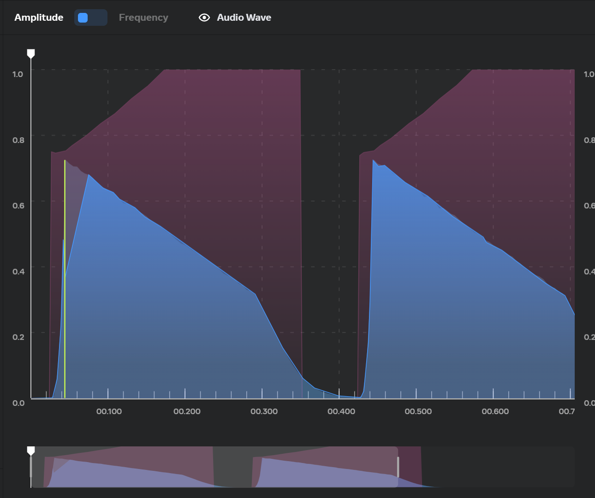
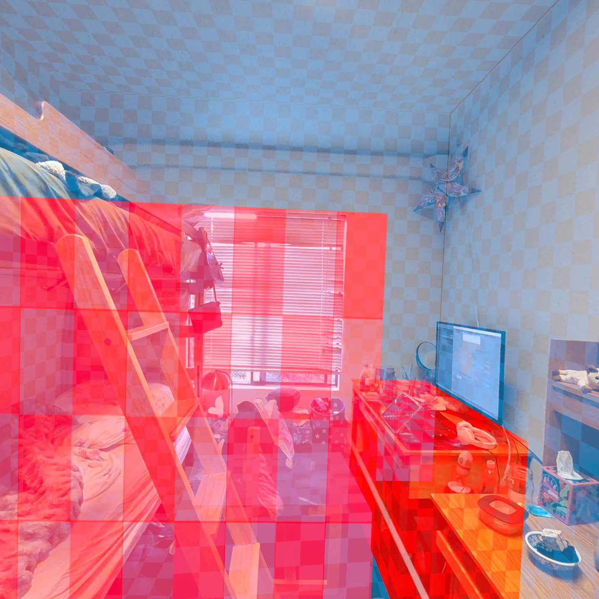

Project Description
The VisAR project aims to transform navigation for the visually impaired through augmented reality (AR) technology. This project combines the power of Unity and the Meta Quest headset to create a comprehensive navigation aid. By integrating Meta Quest's Scene API with Unity's development environment, VisAR offers real-time obstacle detection, proximity alerts, and intuitive guidance to improve spatial awareness and support independent mobility for users with visual impairments. Emphasizing user-centric design and iterative development, VisAR represents a holistic approach to navigation that empowers individuals with visual impairments to navigate confidently and autonomously. The results of this project highlight the potential of AR-based solutions to address navigation challenges, fostering inclusivity and accessibility for all.
Images
 Video
Project Details
The VisAR project aims to create a navigation aid for the visually impaired using augmented reality (AR) technology. Below are the key details of the project:
Data Structures:
The primary data structure used in VisAR is a sorted list to maintain the closest obstacles to the user. Each entry in the list consists of a GameObject reference representing the obstacle, its distance to the user, and the closest point on the obstacle's collider.
Program Structure:
VisAR is developed using Unity, a popular game development platform, and is optimized for the Meta Quest 3 headset. The program structure comprises modular components for obstacle detection, proximity alerts, and user interaction. The integration of Meta Quest's Scene API and Unity's collision system forms the backbone of the obstacle detection mechanism.
Related Works:
VisAR builds upon existing research and technologies in the field of AR-based navigation aids for the visually impaired. Relevant works include studies on obstacle detection algorithms, user interface design for accessibility, and AR applications in assistive technology.
Improvements:
One of the notable improvements in VisAR is the use of dynamically positioned audio sources for proximity alerts, providing more accurate spatial feedback to the user. Additionally, the incorporation of multiple equidistant points for obstacle detection enhances the system's ability to detect obstacles near different parts of the user's body.
References:
- Teutsch, Steven M., et al., editors. Making Eye Health a Population Imperative: A Vision for Tomorrow, 2016, https://www.ncbi.nlm.nih.gov/ books/NBK402367/
- Kuriakose, Bineeth, et al. “Tools and Technologies for Blind and Visually Impaired Navigation Support: A Review.” Taylor & Francis Online, IETE Technical Review, 27 Sept. 2020, www.tandfonline.com/doi/full/ 10.1080/02564602.2020.1819893
User's Guide
To compile VisAR, follow these steps:
- Open the VisAR Unity project in Unity Editor version 2022.3.11f1.
- Ensure that the project settings are configured for the Meta Quest platform.
- Build the project for the desired target platform (e.g., Android).
- Install Meta Quest Developer Hub
- Connect the Headset to a computer using USB
- If you are using Windows, download the OEM USB driver. If you are using macOS, skip the next step as you do not need any additional USB drivers.
- Extract the oculus-adb-driver-2.0 zip file, go to the /oculus-go-adb-driver-2.0/usb_driver/ folder, and double-click the android_winusb.inf file.
- Open Terminal on your computer and run the following command to install the app: adb install -r [path of the apk file]
- Put on the headset, go to Library > Unknown Sources, and then run the app.
- For more precise details, please check the oculus documentation: Set Up Development Environment and Headset